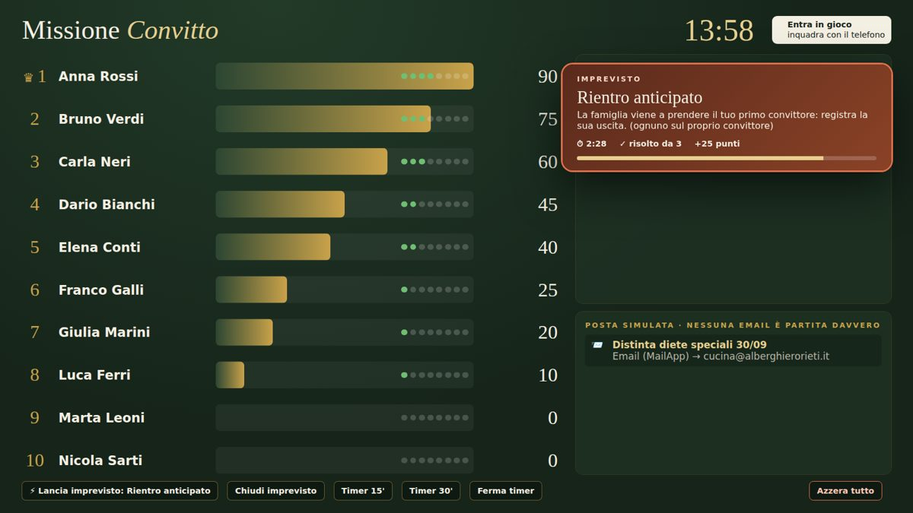

Area del formatore
Promemoria per chi conduce il corso
Questa pagina non contiene il PIN: il proiettore si apre aggiungendolo in fondo all'indirizzo.
Pagina del proiettore
Indirizzo del gioco seguito da ?v=aula&pin= e dal tuo PIN:
https://script.google.com/macros/s/AKfycbwbzcWAxeBYj1xvnG-Ly36ESZbs9Nc4edSUDGu5kDnaiJJKUWfNtBQO44naO7oNoa5a/exec?v=aula&pin=Incolla nel browser del PC collegato al proiettore e aggiungi il PIN alla fine.
Prima del corso (10 minuti)
- Apri la pagina del proiettore: controlla che classifica e riquadro "In diretta" siano vuoti. Se non lo sono, tocca Azzera tutto due volte.
- Dal telefono, in incognito, entra con un corsista, segna una colazione e controlla che compaia sul proiettore. Poi Azzera tutto.
- Apri la presentazione del sito su un secondo schermo o in un'altra scheda.
Durante il corso
- Proietta questo sito e dai l'indirizzo breve convitto-costaggini.github.io/formazione da aprire in incognito.
- Avvia il timer (Timer 30') quando tutti sono entrati nel gestionale.
- Ogni 5-6 minuti tocca ⚡ Lancia imprevisto. Si chiude da solo alla scadenza, oppure con Chiudi imprevisto.
- La posta simulata a destra mostra le email che il gestionale avrebbe inviato: nessuna parte davvero.

Dopo il corso
- Tocca Azzera tutto due volte: convittori, note, uscite e punteggi tornano allo stato iniziale.
- Se non servono altri corsi a breve, nei progetti Apps Script "Registro Convitto - PROVA" e "Missione Convitto" puoi archiviare i deployment (Esegui il deployment › Gestisci deployment › Archivia).
Manutenzione (solo dall'editor Apps Script)
- sistemaCorsisti (progetto Missione Convitto): dopo aver aggiunto o rinominato colleghi in FORM_Corsisti.
- creaAccountFormazione2 (progetto PROVA): dopo sistemaCorsisti, per creare gli account nuovi.
- sbloccaOrariProva (progetto PROVA): se il gestionale di prova blocca i pasti per orario.
- aggiornaImprevisti (progetto Missione Convitto): ripristina l'elenco degli imprevisti.